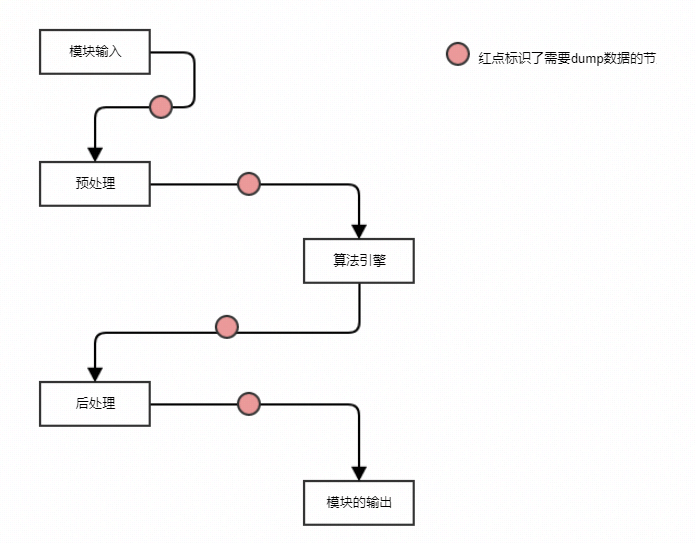

XStream模型与策略开发¶
本文主要介绍XStream内置的算法Method和策略Method，以及解释如何基于这些Method进行业务开发。
整体综述¶
智能业务中method类型通常可以分为两类：
算法method：该类method主要完成load模型、前处理并送给BPU完成预测、获取预测结果、完成结果解析等。
策略method: 该类method无算法模型相关处理，是业务相关的策略模型，如过滤策略method、融合策略method、优选策略method等。
在基于XStream完成模型集成或者策略开发中，需要遵循一下原则：
针对算法模型集成：
XStream提供了FasterRCNNMethod用于处理FasterRCNN多任务模型的集成，用户可以通过json配置复用内置的后处理类型(如输出检测框目标)或者添加特性后处理模块支持自己的多任务模型；
XStream提供了CNNMethod用于通用的cnn分类模型集成，其中预实现了一些模型的前后处理方法，用户可以复用这些方法，也可以基于此拓展支持新的cnn模型的集成。
针对策略开发：
XStream提供了高性能、基于IOU的通用目标跟踪策略MOTMethod，用户可以直接复用该方法支持自己的目标跟踪。
XStream也提供了其他比较常用的策略模块如针对检测框的过滤策略模块FilterMethod，以及针对人脸抓拍识别、人体、车辆视频结构化等业务相关的算法策略模块。
针对计算机视觉应用常用的数据类型定义在xsdk/common/vision_type中，其中定义了视频帧(Frame)、检测框(BBox)、关键点(landmark或skeletion)、属性定义（age 或者gender）等常用数据类型，用户应该尽量复用这里定义的数据类型。
针对一组目标（如来自同一帧的检测框）模型处理或者算法策略，为了便于来自多个method针对同一组目标的处理结果的融合，method的实现通常需要保证输入和输出目标数量不变，例如：输入的类型是人脸框，框的数量是5，输出类型是关键点，那么关键点的数量一定也是5，如果有些检测框因为大小或算力限制被过滤掉，输出结果可以置默认值或者非法状态，而不是不返回结果。
模型集成¶
以检测年龄性别为例，简述X2模型编译和集成验证流程。
1.模型编译¶
模型编译与一致性验证是基于地平线AI工具链的HBDK编译工具链，相关内容请参考AI工具链产品文档http://hbdk.hobot.cc/cc/。
下面按照年龄和性别两个模型来演示如何对这两个模型分别进行编译和整体打包。编译人脸检测和年龄性别模型的命令如下：
hbdk-cc --march x2 -m ./multitask-1-absorb-bn-ft-1-x2-hobot-predict-symbol-x2-0.3.json -p ./multitask-1-absorb-bn-ft-1-x2-hobot-predict-0010-x2-0.3.params -s 1x540x960x3 --pyramid-stride 960 -o faceDet.hbm -i pyramid --O2
hbdk-cc --march x2 -m model-absorb-bn-ft-hobot-predict-symbol.json -p model-absorb-bn-ft-hobot-predict-0121.params -s 1x128x128x3 -o faceAgeGender.hbm -i
resizer --O2
输入来自resizer的模型需要添加 –enable-dbg-dump_input_td 才能在后续一致性验证中使用hbdk-model-verifier工具。要注意在后续使用中使用编译时指定的名字（-o），否则会出现load model info failed等错误。
完成单个模型的编译后，运行如下命令将它们打包
hbdk-pack faceDet.hbm faceAgeGender.hbm -o AgeGender.hbm
最后生成的AgeGender.hbm即为我们可以部署到地平线芯片上的模型打包文件。
2. 模型集成¶
现有的模型集成是通xstream-methods实现的。method中通常包含了模型推理的三大部分：前处理，模型推理，和后处理。通常，对于已经发布的模型，可以直接使用现有的methods进行集成。但使用新发布的模型时，可能还需要进行前、后处理的适配和bpu-predict接口的配置。这个过程中，需要遵从的原则就是：和算法的同学对齐。
在年龄性别预测的例子中，需要用到FasterRCNNMethod和CNNMethod进行模型集成。
2.1 FasterRCNNMethod¶
FasterRCNNMethod主要是对fasterrcnn检测算法模型的集成。通常，FasterRCNNMethod的输入是类型为PymImageFrame或CVImageFrame的图像。前处理将method输入resize成模型输入大小并做格式转换，模型推理通过调用BPU_runModelFromPyramid或BPU_runModelFromImage实现，后处理主要是对多种输出的解析。
集成时，首先要与算法同学确认模型每层的输出是什么，更改配置文件中的model_out_sequence进行适配。可以通过binut_getOutputLayerNum(), binut_getModelOutputInfo()等接口获取有关模型输出的信息。此外还需要确认是否需要扩充method中定义的输出类型FasterRCNNBranchOutType和FasterRCNNOutMsg。
FasterRCNNMethod配置文件：
{
"in_msg_type": "pyramid_image",
"net_info": {
"model_name": "faceDet",
"model_version": "x2-rc-0.2",
"model_out_sequence": [
{
"name": "face_box",
"type": "bbox"
}
],
"model_input_width": 960,
"model_input_height": 540,
"pyramid_layer": 4
},
"method_outs": ["face_box"],
"bpu_config_path": "../configs/bpu_config.json",
"model_file_path": "../models/AgeGender.hbm"
}
enum class FasterRCNNBranchOutType {
BBOX,
KPS,
MASK,
REID,
LMKS2_LABEL,
LMKS2_OFFSET,
LMKS1,
POSE_3D,
PLATE_COLOR,
PLATE_ROW,
INVALID
};
struct FasterRCNNOutMsg {
std::map<std::string, std::vector<BBox>> boxes;
std::map<std::string, std::vector<Landmarks>> landmarks;
std::map<std::string, std::vector<Feature>> features;
std::map<std::string, std::vector<Segmentation>> segmentations;
std::map<std::string, std::vector<Pose3D>> poses;
std::map<std::string, std::vector<Attribute<int>>> attributes;
};
关于FasterRCNNMethod，详细请参见README
2.2 CNNMethod¶
年龄性别的预测，人脸识别等任务都是通过CNNMethod集成的。CNNMethod承载着多种不同的任务，所以其中的前后处理方式也是多样的。CNNMethod的输入和前后处理方式虽然多样，但使用哪个接口和前后处理方式都是可配置的。
CNNMethod配置文件
{
"model_name": "faceAgeGender",
"model_file_path": "../models/AgeGender.hbm",
"bpu_config_path": "../configs/bpu_config.json",
"in_msg_type": "img", # 输入类型，决定前处理方式和使用的bpu-predict接口
"post_fn": "age_gender", # 后处理函数
"norm_method": "norm_by_nothing", # normalize方法，需要和算法对齐
"output_size": 2,
"output_names": [
"cnn_age",
"cnn_gender"
]
}
关于CNNMethod，详细请参见CNNMethod单任务，或CNNMethod多任务。
3. 一致性验证¶
模型集成后，可以通过跑method中的UT或samples简单验证模型编译和集成是否存在问题。为了保证算法的结果能够准确的体现在产品上，还需要进行一致性验证。一致性验证分为三类：数值一致性，单图一致性，和指标一致性。
数值一致性：使用相同的输入，验证模型在BPU上运行的结果是否与在CPU/GPU上运行的结果一致。通过验证数值一致性，可以检查模型或模型编译是否存在问题。验证数值一致性要使用AI工具链中的hbdk-model-verifier工具。
单图一致性：输入一张图，验证在单一模型通路或全流程下输出是否正确。通过验证单图一致性，可以检查前后处理是否存在问题。
指标一致性：输入一批图，验证在单一模型通路或全流程下的指标是否一致。有时因为所使用的平台的不同，数值一致性不能完全对得上。通过验证指标一致性，可以确认系统是否可用。
一致性验证过程需要和算法同学一起配合进行。验证前需要共同确定通路，检查依赖库是否相同。需要从算法同学处获得测试集，UT，数据处理脚本等。验证过程中要dump出中间结果和最终结果，并与算法同学在相同流程下得出的结果进行比较。

策略开发¶
1. 综述¶
该类method无算法模型相关处理，是纯算法或者业务相关的策略模型，如过滤策略method、融合策略method、优选策略method等;
XStream预支持了MOTMethod，FilterMethod等Method，其中
MOTMethod提供了高性能、基于IOU的通用目标跟踪策略，用户可以直接复用该方法支持自己的目标跟踪。
FilterMethod提供了其他比较常用的策略模块如针对检测框的过滤策略模块，以及针对人脸抓拍识别、人体、车辆视频结构化等业务相关的算法策略模块。
其他更多的Method，请直接参考源码目录solution_zoo/xstream/methods.
2. motmethod¶
多目标跟踪Method，用于检测框的跟踪、ID分配。
2.1 输入¶
| Slot | 内容 | 备注 |
|---|---|---|
| 0 | XStreamBBox_list | 必要项 |
2.2 输出¶
| Slot | 内容 | 备注 |
|---|---|---|
| 0 | XStreamBBox_list | 带track_id |
| 1 | XStreamUint32_List | disappeared_track_id_list |
2.3 补充说明¶
内部有状态机来存储每个tracklet。
该Method支持workflow多实例，method_info.is_thread_safe_ = false，method_info.is_need_reorder = true。
2.4 配置文件参数¶
| 字段 | 描述 | 默认值 |
|---|---|---|
| tracker_type | MOT工作模式，目前仅支持IOU based MOT | IOU |
| device | 设备名称，若设置为X1，最大track_id为255，用以比对一致性 | X2 |
| update_no_target_predict | 无检测框输入更新状态机track预测框，设置为true对主体连续运动且有遮挡的场景效果好，设置为false对主体不移动且有遮挡的场景效果好 | false |
| support_hungarian | 匈牙利匹配开关，打开匈牙利匹配id召回多，准确率下降；关闭则id召回少，准确率提升 | false |
| need_check_merge | 每组输入框IOU大于一定阈值做融合，该操作会影响输出数量，检测框融合多在检测模块完成，一般情况置为false | false |
| noriginal_bbox | 是否使用卡尔曼滤波器预测框，true为不使用，输出原始框坐标 | true |
| max_track_target_num | 状态机保存最大track数 | 512 |
| max_det_target_num | 输入框最大计算数 | 512 |
| vanish_frame_count | 消失帧数 | 30 |
| time_gap | 帧间隔时间 | 40 |
关于motmethod，详细请参见README
3. filtermethod¶
过滤Method，用于检测框的过滤，未通过过滤条件的bbox会被标记为FIlTERED状态。
3.1 输入¶
| Slot | 内容 | 备注 |
|---|---|---|
| 0 | XStreamDisappeared_id | 可选项 |
| 1 | XStreamBBox_list | 可选项 |
| 2 | XStreamPose3D_list | 可选项 |
| 3 | XStreamLandmarks_list | 可选项 |
| 4 | blur | 可选项 |
| 5 | brightness | 可选项 |
| 6 | eye_abnormalities | 可选项 |
| 7 | mouth_abnormal | 可选项 |
| 8 | left_eye | 可选项 |
| 9 | right_eye | 可选项 |
| 10 | left_brow | 可选项 |
| 11 | right_brow | 可选项 |
| 12 | forehead | 可选项 |
| 13 | left_cheek | 可选项 |
| 14 | right_cheek | 可选项 |
| 15 | nose | 可选项 |
| 16 | mouth | 可选项 |
| 17 | jaw | 可选项 |
3.2 输出¶
| Slot | 内容 | 备注 |
|---|---|---|
| 0 | filter_info | 过滤错误码 |
| 1 | XStreamDisappeared_id | 可选项 |
| 2 | XStreamBBox_list | 可选项 |
| 3 | XStreamPose3D_list | 可选项 |
| 4 | XStreamLandmarks_list | 可选项 |
| 5 | blur | 可选项 |
| 6 | brightness | 可选项 |
| 7 | eye_abnormalities | 可选项 |
| 8 | mouth_abnormal | 可选项 |
| 9 | left_eye | 可选项 |
| 10 | right_eye | 可选项 |
| 11 | right_brow | 可选项 |
| 12 | forehead | 可选项 |
| 13 | left_cheek | 可选项 |
| 14 | right_cheek | 可选项 |
| 15 | nose | 可选项 |
| 16 | mouth | 可选项 |
| 17 | jaw | 可选项 |
3.3 补充说明¶
对于不同的可选项可以自由组合，但是此method的输入必须大于等于1。例如对于智能帧过滤可以只输入box相关数据，对于抓拍帧需要输入disappeared_id、box、pose、landmark等
内部无状态机，该Method支持workflow多实例，method_info.is_thread_safe_ = true，method_info.is_need_reorder = false。
3.4 配置文件参数¶
| 字段 | 描述 | 默认值 |
|---|---|---|
| image_width | 视频帧宽度 | 1920 |
| image_height | 视频帧高度 | 1080 |
| face_size_thr | 人脸检测框大小阈值 | 72 |
| head_size_thr | 人头检测框大小阈值 | 72 |
| body_size_thr | 人体检测框大小阈值 | 72 |
| face_pv_thr | 人脸置信度阈值 | 0.98 |
| head_pv_thr | 人头置信度阈值 | 0.98 |
| body_pv_thr | 人体置信度阈值 | 0.98 |
| face_expand_scale | 人脸外扩系数，用以过滤外扩出边界的检测框 | 1.0 |
| head_expand_scale | 人头外扩系数，用以过滤外扩出边界的检测框 | 1.0 |
| body_expand_scale | 人体外扩系数，用以过滤外扩出边界的检测框 | 1.0 |
| max_box_counts | 最大检测框数，设置为0不对检测框数目作过滤 | 0 |
| filter_with_frontal_thr | 是否使用总体阈值进行过滤 | false |
| frontal_pitch_thr | 正侧椭球pitch阈值 | 30 |
| frontal_yaw_thr | 正侧椭球yaw阈值 | 40 |
| frontal_roll_thr | 正侧椭球roll阈值 | 0 |
| frontal_thr | 正侧脸阈值 | 1000 |
| quality_thr | 清晰度阈值，越小越好 | 0.5 |
| lmk_thr | 人脸坐标阈值 | 0.5 |
| lmk_filter_num | 人脸坐标点过滤数量 | 0 |
| bound_thr_w | 视频帧宽边界 | 10 |
| bound_thr_h | 视频帧高边界 | 10 |
| black_area_iou_thr | 黑名单区域iou阈值 | 0.5 |
| black_area_list | 黑名单区域，例如可配置为[[10, 10, 30, 30], [40, 40, 50, 50]]即为在两个黑名单区域被过滤 | [] |
| white_area_list | 白名单区域 | [] |
| brightness_min | 亮度过滤最小值 | 0 |
| brightness_max | 亮度过滤最大值 | 4 |
| abnormal_thr | 行为异常遮挡阈值，越小表示行为较为正常 | 0.5 |
| filter_status | 过滤结果状态设定，0：有效，1：被过滤，2：不可见，3：消失，4：无效 | 4 |
| age_min | 年龄最小值 | 0 |
| age_max | 年龄最大值 | 100 |
| age_thr | 年龄阈值 | 0.5 |
| stop_id | 停止输出ID值 | -1 |
| left_eye_occluded_thr | 左眼遮挡阈值，越小遮挡程度越轻 | 0.5 |
| right_brow_occluded_thr | 右眼遮挡阈值，越小遮挡程度越轻 | 0.5 |
| forehead_occluded_thr | 前额遮挡阈值，越小遮挡程度越轻 | 0.5 |
| left_cheek_occluded_thr | 左脸遮挡阈值，越小遮挡程度越轻 | 0.5 |
| right_cheek_occluded_thr | 右脸遮挡阈值，越小遮挡程度越轻 | 0.5 |
| nose_occluded_thr | 鼻子遮挡阈值，越小遮挡程度越轻 | 0.5 |
| mouth_occluded_thr | 嘴巴遮挡阈值，越小遮挡程度越轻 | 0.5 |
| jaw_occluded_thr | 下巴遮挡阈值，越小遮挡程度越轻 | 0.5 |
| input_slot | 输入数据的信息，表明每个数据的名称、类型、分组 | 已有分类：id,bbox,Pose3D,landmark等，与vision type中类型一一对应，已有分组：none,face,head,body,当需要添加新的分离与分组时，需要确定代码中是否支持 |
| err_description | 错误码描述，对应字段设置为多少filter_info输出对应的错误码 |
关于filtermethod，详细请参见README
回灌流程¶
1. 背景¶
在XProto中，smartplugin示例smart_main.cpp基于smartplugin和vioplugin运行workflow，验证和展示method能力。目前vio有两种输入方式，一种是通过sensor从真实场景获取图像，另一种是在cp端采用回灌方式输入用户预先准备的图片。
2. 回灌的意义¶
回灌就是阻断从sensor获取图片的路径，改为输入用户预先准备的图片。这样保证了每次的输入都是相同的，便于算法效果验证。另外，回灌也是人脸识别应用场景中本地图片注册入库的输入方法。
3. 如何回灌¶
在smart_main.cpp程序中会读取vio配置vio_config.json，根据配置选择输入方式。当前配置内容如下：
{
// 镜头类型，单目或双目
"cam_type": "mono",
// 输入源类型:
// ipc_camera：ipc等后接场景，输入通常为bt1120
// panel_camera: 面板机等前接场景，输入通常为mipi
// jpeg_image_list:jpeg格式的回灌图片
// nv12_image_list:nv12格式回灌图片
"data_source": "ipc_camera",
// 控制Vio送数上限，最大缓存数量
"max_vio_buffer": 3,
// vio时间戳类型：
// input_coded: 通过y图的前16个字节的编码获得时间戳，通常用于ipc等后接场景
// frame_id: 读取vio数据结构的frame_id字段作为时间戳，96board等使用该配置
// raw_ts: 读取vio数据结构中的timestamp字段作为时间戳，面板机standalone方案使用该类型
"ts_type": "input_coded",
// 回灌name.list
"file_path": "name.list",
// jpeg回灌时图片对齐参数
"pad_width": 1920,
"pad_height": 1080,
// 回灌每帧时间间隔，单位是ms
"interval": 20,
// jpeg和nv12 name list是否支持循环回灌
// name_list_loop等于1，支持循环回灌；name_list_loop等于0，只回灌一轮
"name_list_loop": 1,
// 对应每种输入源的详细配置文件
"vio_cfg_file": {
"ipc_camera": "configs/vio/hb_vio.json",
"panel_camera": "configs/vio/panel_camera.json",
"jpeg_image_list": "configs/vio/vio_onsemi0230_fb.json",
"nv12_image_list": "configs/vio/vio_onsemi0230_fb.json",
"image": "configs/vio/vio_onsemi0230_fb.json"
}
}
关于interval和name_list字段有如下注意事项：
1）interval字段：
a）针对于x2系统，目前只有cached image list方式支持，jpeg和nv12回灌方式无此字段
b）针对于x3系统，原生接口和海思接口三种回灌方式（cache image list、jpeg、nv12)均支持
2）name_list_loop字段：
a）针对于x2系统，不支持此功能
b）针对于x3系统，原生接口和海思接口均支持此功能
举一例说明如何进行回灌测试，如果用户需要回灌3张jpeg图片，图片在./configs/picture下。
首先到./configs/picture下生成图片列表文件，执行以下命令：
ls | sed "s:^:`pwd`/:" > ../name.list
将图片路径保存在./configs/name.list
修改vio_config.json文件，vio_config.json配置文件修改如下
{ "cam_type": "mono", "data_source": "jpeg_image_list", "max_vio_buffer": 3, "ts_type": "frame_id", "file_path": "configs/name.list", "pad_width": 1920, "pad_height": 1080, "vio_cfg_file": { "jpeg_image_list": "configs/vio/vio_onsemi0230_fb.json" } }
执行./smart_main ./config/smart_config.json即可进行回灌测试。
支持回灌方式说明：
针对于x2系统。支持 cached image list、jpeg image list、nv12 image list这三种回灌方式
针对于x3系统(原生vio接口和海思vio接口)。支持cached image list、jpeg image list、nv12 image list这三种回灌方式